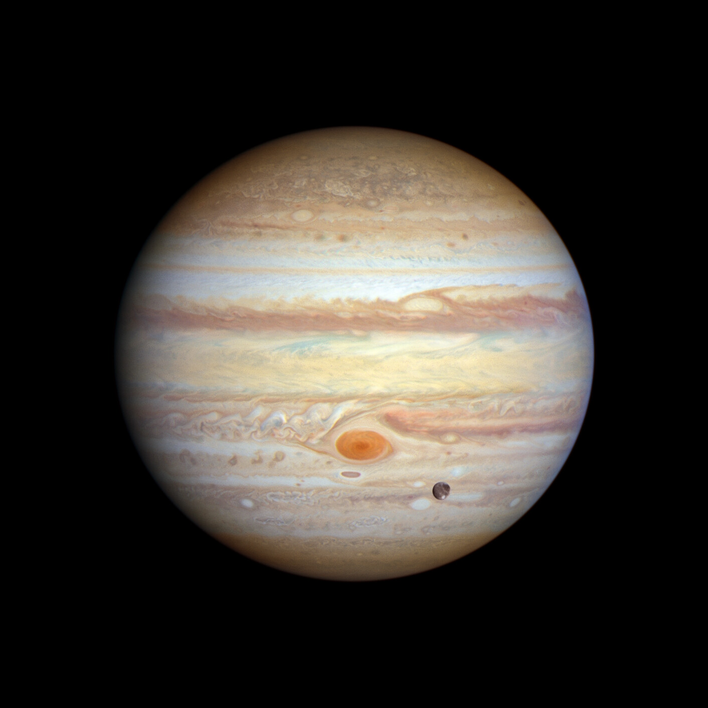

|  |
|
Júpiter es el planeta más grande de nuestro sistema solar. Es parecido a una estrella, pero nunca llegó a ser lo suficientemente masiva como para empezar a arder. Está cubierto de rayas de nubes arremolinadas. Tiene fuertes tormentas como la Gran Mancha Roja, que hace cientos de años que dura. Júpiter es un gigante hecho de gas, y no tiene una superficie sólida, pero puede tener un núcleo interno sólido de aproximadamente el tamaño de la Tierra. Júpiter también tiene anillos, pero son demasiado tenues para verlos muy bien. Es el planeta más grande de nuestro sistema solar. Es un gigante hecho de gas: sobre todo de hidrógeno y helio. Tiene una atmósfera muy densa. Tiene anillos, pero son muy difíciles de verTiene 95 lunas confirmadas. Es el quinto planeta contando desde el Sol, así que tiene a Marte y a Saturno por vecinos. |